01
사업개발 · 인허가
수산인더스트리 · 세광종합기술단
기획
국내 발전소 입찰업무, 해외사업(바라카원전 정비사업 등) 및 사업관리 / 발전단지 검토·공유수면 점·사용료 산출, 부유식 풍황계측기 3개소 설치 인허가, 해양입지컨설팅, 공동개발협약서 작성
발전사업 개발·인허가부터 육상변전소 EPCC 건설까지, 해상풍력 밸류체인을 단계별로 수행한 PMP 보유 엔지니어
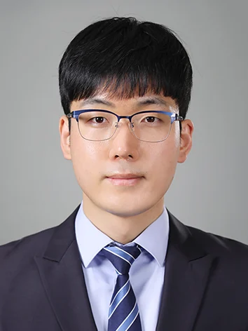
발전사업은 단계마다 수행 주체가 바뀌고, 그 경계에서 리스크가 생깁니다. 아래 네 구간을 각각 다른 회사에서 실무로 수행했습니다.
국내 발전소 입찰업무, 해외사업(바라카원전 정비사업 등) 및 사업관리 / 발전단지 검토·공유수면 점·사용료 산출, 부유식 풍황계측기 3개소 설치 인허가, 해양입지컨설팅, 공동개발협약서 작성
Equinor 반딧불이 부유식 해상풍력 기술용역 — 부유체 시방서 초안, 인허가 법률 검토, 발주처 보고 영문화 및 설계문서 관리
안마 532MW 육상변전소 EPCC — HSSE Plan, HAZID(DNV), 설계문서 관리 / TP·중량물 해상운송 제안 및 Stowage·Stability 검토 / 제조업 품질부서 기술 클레임 처리
한수원 계획예방정비(OH) 참여 / 엔진·발전기·펌프·보일러 운전 및 총분해수리 실무
기획·설계·시공(제작)·운영 전 단계의 일정·리스크·문서·변경·기성고와 수행기업 간 인터페이스를 통합 관리합니다.
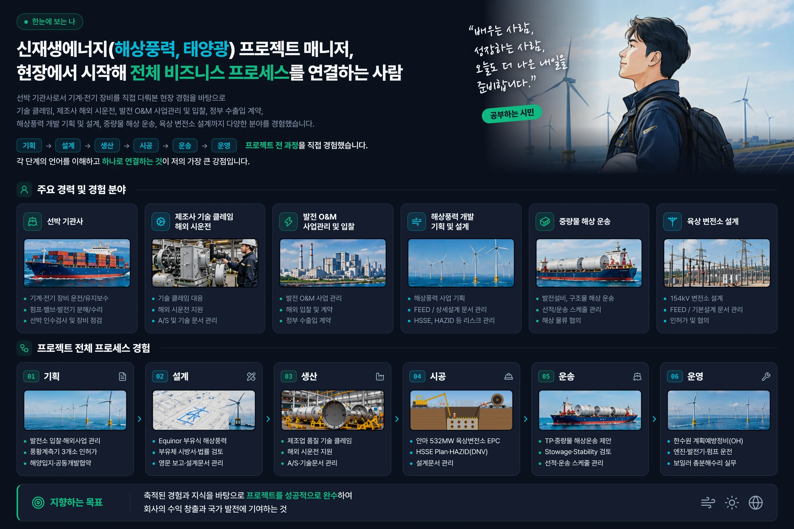
원본 크기로 보기현장에서 시작해 사업 전 과정을 연결하는 신재생에너지(해상풍력·태양광) 프로젝트 매니저
선박 기관사로 기계·전기 설비를 직접 다뤄 온 현장 경험 위에, 제조사 기술클레임·해외 시운전, 발전 O&M 사업관리·입찰, 관공서 수출입 계약을 거쳐 해상풍력 기획·설계, 중량물 해상운송, 육상변전소 설계까지 경력을 넓혀 왔습니다. 기획부터 운영까지 프로젝트 전 단계를 실무로 경험한 만큼, 각 단계의 언어를 이해하고 서로 연결하는 것이 저의 강점입니다.
스스로를 '공부하는 시민'이라 소개합니다. 일하는 모든 현장을 배움의 장으로 삼아, 어렵고 힘든 공부와 노동을 함께 해내겠다는 다짐입니다.
현장–본사–발주처 사이의 이해관계를 조정하고, 기본설계·실시설계 단계의 문서 체계와 공정을 관리했습니다. 변경계약(Change Order)과 기성고 관리 경험을 보유합니다.
근거PMP (PMI, 2022.09) / 프로젝트관리 NCS 초·중급 34h / 경영기획 NCS 17h / MS Project
부유식 해상풍력 사업의 인허가 서류를 직접 작성했습니다. 과업지시서, 원·하도급 계약서, 공유수면 점·사용 신청서, 공동개발협약서가 여기에 포함됩니다.
근거공유수면 점사용료 산출 / 풍황계측기 설치 인허가 / 해양입지컨설팅 / WindPro · QGIS
532MW 안마 해상풍력 육상변전소 EPCC의 HSSE Plan을 작성했습니다. HAZID 용역은 DNV와 계약하고 수행 과정을 관리했습니다.
근거HSSE Plan 수립 / HAZID 용역계약 및 관리 (DNV) / OPITO Basic Offshore Safety 24h
발전소 정비용역 입찰서류(사전입찰·적격심사)를 작성했습니다. 해외 EPC 발주처의 RFP/RFQ를 검토하고 Voyage·Time Charter 견적서와 제안서를 작성했습니다.
근거무역영어 1급 / 수출입관리·무역실무 NCS 18h / 원가관리회계 19h
엔진, 발전기, 펌프(기어·원심·피스톤), 압축기, 모터, 청정기, 보일러, 유압기계 및 밸브를 직접 운전·정비했습니다. 도면과 매뉴얼을 읽고 공급자와 기술 논의가 가능합니다.
근거해기사 2급(기관사) / 설비보전기사 / 신재생에너지발전설비기사 / 원자력발전계통교육 77h
Equinor, DNV, Lamprell, Technip, Saipem 등 해외 발주처·선급과 영문 문서로 실무를 진행했습니다. 시방서, 감리 실적보고서, RFQ, 제안서를 영문화했고, 유럽·미주·중동·아시아·아프리카 시운전·기술 클레임 현장에 직접 나가 문제를 처리했습니다.
근거해외 A/S·시운전 출장 (1년 약 80회 비행) / ITT 비즈니스영어번역 2급 / 캐나다 어학연수 1년 (ILAC/KGIBC)
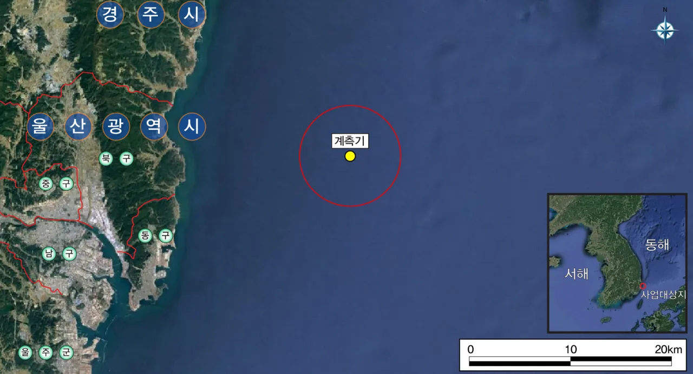
(주)세광종합기술단 · 에너지개발사업부 · 과장
해상풍력 발전사업 허가에는 풍황자원 계측이 선행되어야 합니다. 부유식 풍황계측기 3개소를 설치해야 했고, 지점마다 공유수면 점·사용 허가가 필요했습니다.
인허가 용역의 문서 전반(과업 정의부터 하도급 계약까지)을 작성했습니다.
풍황계측기 3곳의 설치 인허가에 필요한 모든 문서를 작성하고 제출하여 용역을 차질 없이 마쳤습니다.
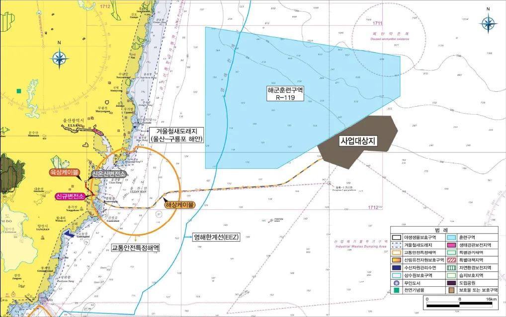
(주)세광종합기술단 · 에너지개발사업부 · 과장
노르웨이 Equinor가 추진하는 반딧불이 부유식 해상풍력 사업의 Windfarm Offshore Area 기술용역입니다. 발주처가 외국계여서 모든 산출물에 국문 법령 검토와 영문 보고가 동시에 필요했습니다.
부유체 관련 기술 문서 작성과 인허가 법률 검토, 공유수면 관련 비용 산출, 발주처 보고 영문화를 담당했습니다.
공유수면 점·사용 신청과 점·사용료 산출, 인허가 법률 검토, 해양입지컨설팅을 주도해 사업 초기의 행정적·법률적 불확실성을 완화했습니다. 발주처 제출 문서를 영문화하고 기술·계약 문서를 정비해 글로벌 디벨로퍼와의 사업 협상을 지원했습니다.
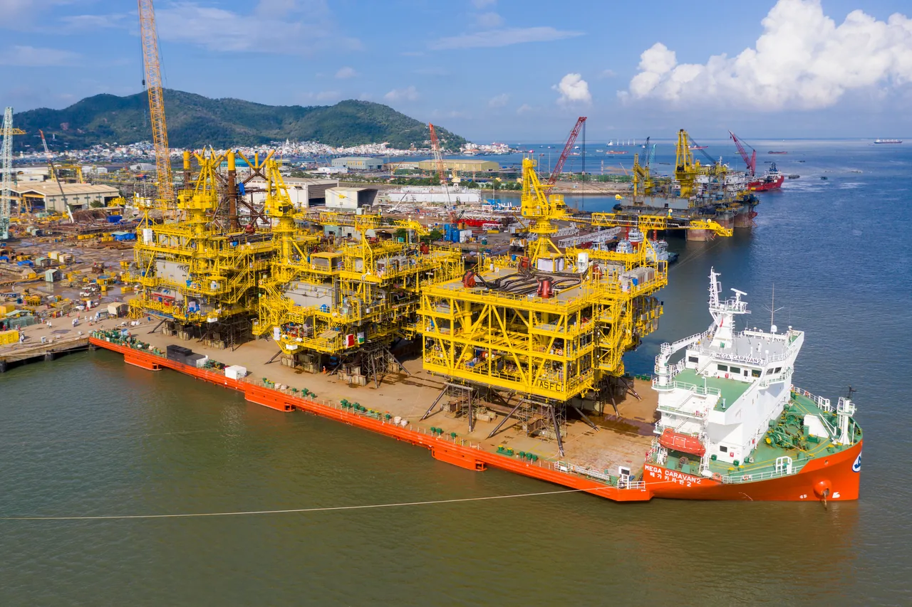
(주)에이치엠티메가라인 · 영업본부 · 과장
해외 EPC사의 FLNG 모듈·해상풍력 변전소·Transition Piece 등 대형 구조물은 자항식 중량물 운반선으로만 운송할 수 있습니다. 화물마다 중량·형상과 운송 조건이 달라, 입찰 단계부터 적재계획과 복원성을 검토해 프로젝트별 최적의 운송 방안을 제시해야 했습니다.
자항식 중량물 운반선 용선 영업과 사업개발을 맡아, 발주처 RFP/RFQ 검토부터 제안서·견적서 작성, 입찰·제안·수주와 계약 변경 관리까지 담당했습니다.
해상풍력 TP 운송을 포함한 해외 EPC 프로젝트 제안·견적을 수행했습니다. 해상풍력 설비의 운송·설치 제약 조건을 실무로 파악했습니다.
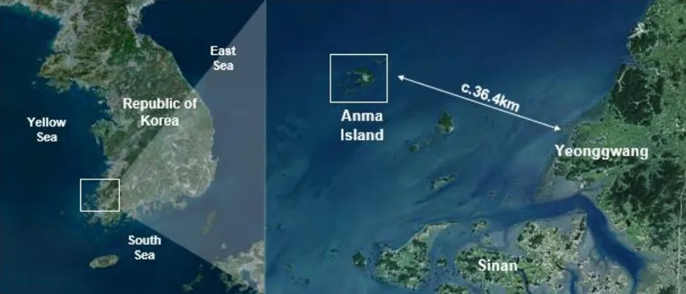
(주)삼진일렉스 · 송변전사업본부 · 과장
전남 영광 안마 해상풍력단지(532MW)의 계통 연계용 육상변전소 EPCC 프로젝트입니다. 기본설계에서 실시설계로 넘어가는 구간이었습니다. 설계 산출물이 동시에 발생하는 반면, HSE 체계는 아직 수립 전이었습니다.
송변전사업본부 소속으로 설계 문서 관리와 HSE 체계 수립, 리스크 검토 용역 발주를 담당했습니다.
발주처 제출용 HSSE Plan을 수립·관리하고, DNV HAZID 기술용역의 발주부터 수행 및 결과물 검토까지 전 과정을 관리했습니다. 또한 설계 변경이 빈번한 분야의 문서 이력과 변경사항을 체계적으로 추적·관리하는 문서관리체계를 운영했습니다.
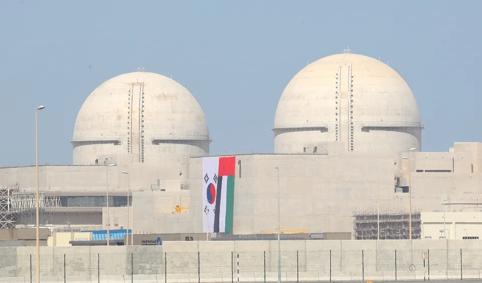
(주)수산인더스트리 · 사업관리/신성장사업/해외사업팀 (겸임)
국내 발전정비 업계가 처음으로 UAE 바라카 원전 1호기 경상정비 경쟁입찰에 참여하는 건이었습니다. 회사로서도 첫 해외사업이라 참고할 선례가 없는 상태에서 입찰 체계를 처음부터 만들어야 했습니다.
사업관리·신성장사업·해외사업팀을 겸임하며 입찰 문서와 해외 파트너십 업무를 담당했습니다.
바라카 원전 정비사업 경쟁입찰 참여를 지원하고 사우디 현지 기업 2곳과 MOU를 체결하며 해외사업개발 및 파트너십 구축 경험을 쌓았습니다. 대규모 해외 프로젝트를 수행하며 전문인력 확보와 효과적인 리스크 분담의 중요성을 체감했고, 이를 계기로 프로젝트 관리 역량을 강화하여 PMP 자격을 취득했습니다.
(주)한진해운 · 2등 기관사
인도양 항해 중 선박 선수부가 침수되어 해당 구역의 장비 다수가 해수에 잠겼습니다. 포기하면 운항 일정이 지연되고 침수 장비는 전량 폐기해야 하는 상황이었습니다.
장비 매뉴얼을 처음부터 다시 학습하고, 회사 지침에 따른 복구 절차를 2개월간 수행했습니다. 침수 장비를 모두 정상 가동 상태로 되돌렸고, 선박은 예정된 일정대로 운항했습니다. 이 건에 대한 사내 평가로 회사 발주 신조선 인수 멤버에 선발되었습니다.
(주)한진해운 · 2등 기관사
한진해운이 발주하고 삼성중공업이 건조한 컨테이너선 한진인디고호(45,169GRT)의 신조선 인수 멤버로 참여했습니다. 조선소에서 기관 설비의 설치·시운전·인수 검사를 직접 확인했습니다. 설계 도면이 실제 설비로 구현되는 전 과정을 경험했습니다.
송변전사업본부 · 과장 · 해상풍력
매출 1,800억원 / 임직원 150명 / 전기·정보통신·소방설비·EMP 방호 전문건설 · http://www.samjinelex.com/
안마 해상풍력(532MW) 육상변전소 EPCC 프로젝트에서 설계문서 관리와 HSE 체계 수립을 맡았습니다.
영업본부 (Chartering & Customer Relationship Division) · 과장 (Manager) · 해운·물류
KCTC 자회사 / 매출 약 250억원 / 임직원 약 12명 / 중량화물 운반 전문 해운선사 · https://www.hi-megaline.com/
중량물 운반선(HTV) 용선 영업을 맡아 해외 EPC 발주처 제안·견적과 변경계약을 처리했습니다.
에너지개발사업부 · 과장 · 해상풍력
매출 약 700억원 / 임직원 약 250명 / 항만 전문 엔지니어링 · http://www.sekwangeng.co.kr/new/
해상풍력 발전사업의 개발·인허가 문서와 설계 지원 산출물을 작성했습니다.
고객지원팀 · 전임팀장 · 해양장비
매출 약 300억원 / 임직원 약 44명 / B2G 해양장비 납품·시운전·정비 · https://dkmtech.com/
해경·해군 등 관공서 납품 해양장비의 기술지원과 원제작사 대응을 담당했습니다.
사업관리팀 · 신성장사업팀 · 해외사업팀 (겸임) · 사원 · 발전·플랜트
매출 약 2,638억원 / 임직원 약 1,316명 / 발전소·플랜트 전기공사 및 설비보수 · https://www.soosanind.co.kr/
원자력·화력·신재생 O&M 사업의 국내외 입찰서류를 작성하고, 해외사업 개척을 지원했습니다.
품질경영본부 · 계장 · 조선기자재
매출 약 3,558억원 / 임직원 약 284명 / 선박 구성부품 및 환경저감장치 제조 · https://www.worldpanasia.com/
선박 구성부품·환경저감장치의 국내외 기술 클레임을 처리하고 A/S 출장을 수행했습니다.
컨테이너 선대팀 · 2등 기관사 · 해운·물류
매출 약 9조 7,000억원 / 임직원 약 1,400명 / 국내 최대 해운기업
풀컨테이너선 기관사관으로 승선하며 기계·전기 설비 전반을 운전·정비했습니다.
| 명칭 | 발급기관 | 취득일 |
|---|---|---|
| PMP (Project Management Professional) | PMI | 2022.09.15 |
| 설비보전기사 | 한국산업인력공단 | 2024.06.18 |
| 신재생에너지발전설비기사 (태양광) | 한국산업인력공단 | 2023.06.09 |
| 해기사 2급 (기관사) | 한국해양수산연수원 | 2012.11.19 |
| 무역영어 1급 | 대한상공회의소 | 2021.10.06 |
| 컴퓨터활용능력 1급 | 대한상공회의소 | 2016.04.22 |
| ITT 비즈니스영어번역 2급 | 국제통역번역협회 | 2014.08.05 |
| 한국사능력검정시험 1급 | 국사편찬위원회 | 2016.02.11 |
| 명칭 | 발급기관 | 취득일 | 시간 | 분야 |
|---|---|---|---|---|
| 원자력발전계통교육 | 한국폴리텍Ⅲ대학 | 2017.06.19 ~ 2017.06.30 | 77 | 발전 |
| [재경관리사] 재무회계 기본이론 | 휴넷 | 2021.11 | 36 | 회계 |
| Basic Offshore Safety Induction & Emergency Training (OPITO) | COENS | 2015.05.11 ~ 2015.05.13 | 24 | 안전 |
| RT-flex 전자엔진 고등과정 | Wärtsilä Land & Sea Academy | 2012.11.14 ~ 2012.11.16 | 24 | 설비 |
| 냉동컨테이너 진단 및 수리 | 한진해운 운항훈련원 | 2010.02.03 ~ 2010.02.05 | 24 | 설비 |
| [재경관리사] 원가관리회계 기본이론 | 휴넷 | 2021.10 | 19 | 회계 |
| 수출입관리 및 무역실무 (NCS 02040302) | 휴넷 | 2019.10 | 18 | 무역 |
| 프로젝트관리 (NCS 01010102) | 휴넷 | 2021.10 | 17 | PM |
| 프로젝트관리 중급 (NCS 01010102) | 휴넷 | 2022.01 | 17 | PM |
| 경영기획 (NCS 02010101) | 휴넷 | 2022.01 | 17 | PM |
| 동력배선 (NCS, HRD-Net) | 한국폴리텍대학 동부산캠퍼스 | 2010.01.11 ~ 2010.01.12 | 16 | 설비 |
| 기관실 자동화 시스템 운용 시뮬레이션 | 한진해운 운항훈련원 | 2010.04.01 ~ 2010.04.10 | 16 | 설비 |
| 할랄과 중동시장 비즈니스 실무 | 한국무역협회 | - | 16 | 무역 |
| 현장 CS 대응방법 (NCS 02010302) | 휴넷 | 2020.02.24 ~ 2020.03.24 | 8 | CS |
ILAC에서 ESL·비즈니스영어 과정을, KGIBC에서 통·번역 과정을 이수했습니다.
풀컨테이너선 기관사관으로 5대양 6대주를 항해했습니다. 파나시아 재직 중에는 유럽·미국·중국·호주·동남아·남아프리카로 A/S 및 기술 클레임 출장을 수행했습니다. 수산인더스트리 재직 중에는 UAE·사우디·말레이시아·베트남 태양광 해외사업에 참여했습니다.
학사 졸업 / 학점 3.81 / 4.5
졸업
국가연구자번호 비공개
「AI와 e-Navigation 기반의 차세대 글로벌 3D 해상교통관제 시스템 개발」 국가 R&D 과제(2019.10 ~ 2022.03 · 정부연구비 215백만원 · (주)DK엠텍)에 참여연구원(참여율 74%)으로 2개 연차 참여했습니다. 국가과학기술지식정보서비스(NTIS) 등재 실적입니다.
능숙 한글(HWP), MS Word, MS Excel, MS PowerPoint
활용 MS Project, QGIS, WindPro, AutoCAD, PDF 편집
해군 수송병과 / 2010.02.02 ~ 2013.05.11 / 승선근무예비역 복무 만료
대한산업보건협회 한마음혈액원장 / 2023.12.30
자격증과 교육이수증 사본입니다. 썸네일을 누르면 원본이 새 탭에서 열립니다.
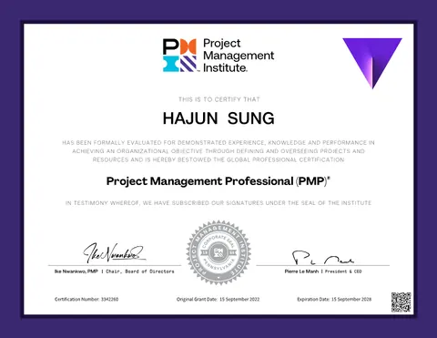
원본 보기 PMP (Project Management Professional) PMI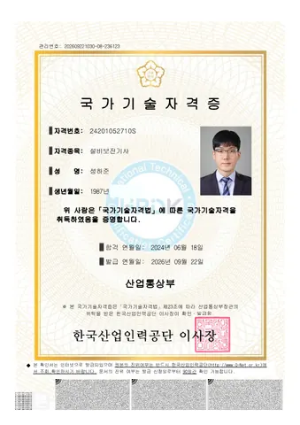
원본 보기 설비보전기사 한국산업인력공단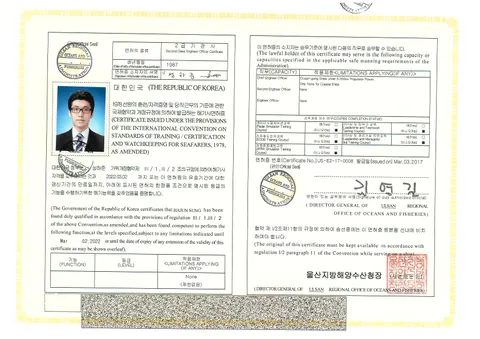
원본 보기 해기사 2급 (기관사) 한국해양수산연수원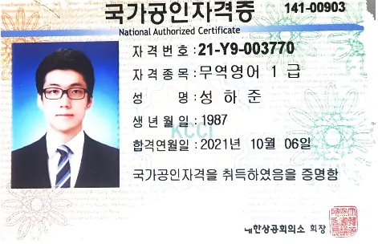
원본 보기 무역영어 1급 대한상공회의소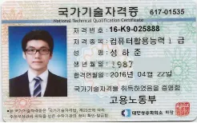
원본 보기 컴퓨터활용능력 1급 대한상공회의소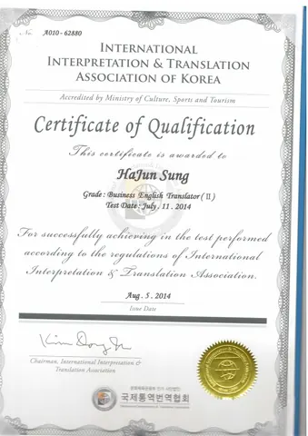
원본 보기 ITT 비즈니스영어번역 2급 국제통역번역협회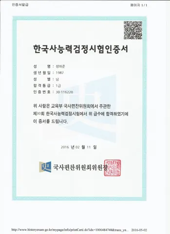
원본 보기 한국사능력검정시험 1급 국사편찬위원회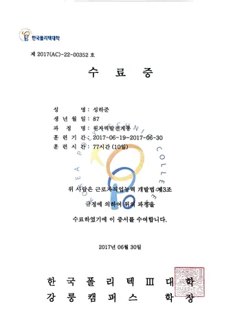
원본 보기 원자력발전계통교육 한국폴리텍Ⅲ대학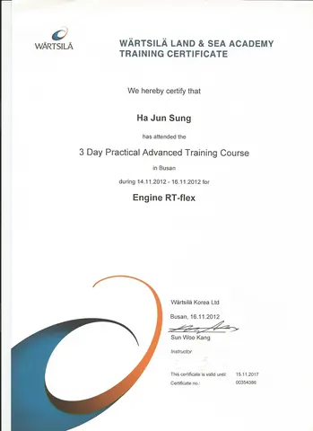
원본 보기 RT-flex 전자엔진 고등과정 Wärtsilä Land & Sea Academy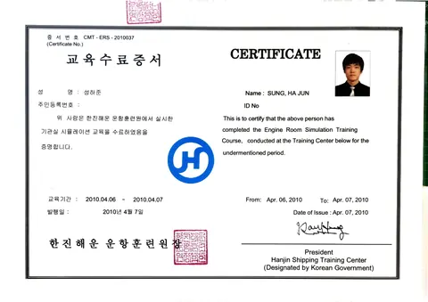
원본 보기 기관실 자동화 시스템 운용 시뮬레이션 한진해운 운항훈련원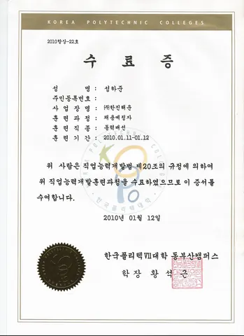
원본 보기 동력배선 (NCS, HRD-Net) 한국폴리텍대학 동부산캠퍼스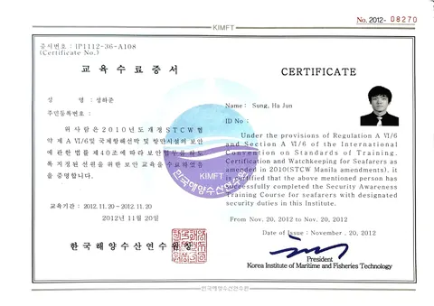
원본 보기 선박 보안교육 —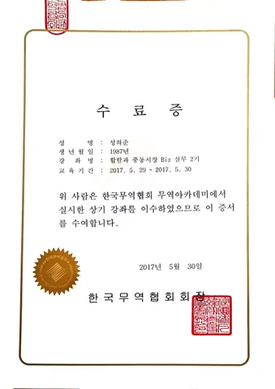
원본 보기 할랄과 중동시장 비즈니스 실무 한국무역협회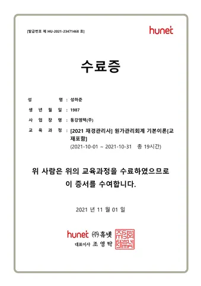
원본 보기 [재경관리사] 원가관리회계 기본이론 휴넷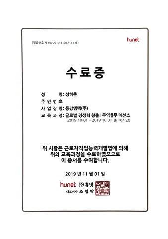
원본 보기 무역실무 에센스 휴넷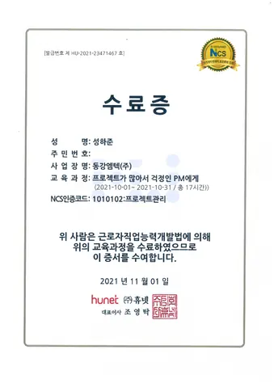
원본 보기 프로젝트가 많아서 걱정인 PM에게 휴넷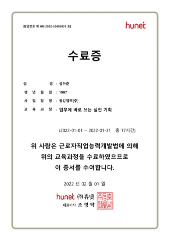
원본 보기 업무에 바로 쓰는 실전 기획 휴넷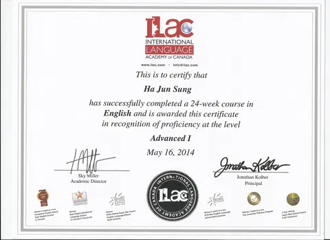
원본 보기 ILAC ESL 과정 ILAC (International Language Academy of Canada)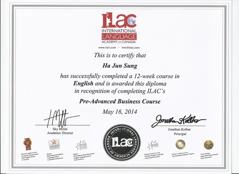
원본 보기 ILAC 비즈니스영어 과정 ILAC (International Language Academy of Canada)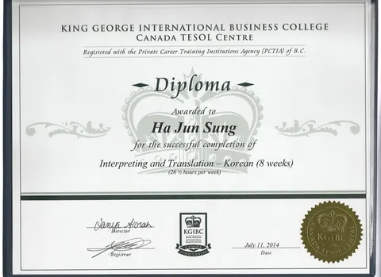
원본 보기 KGIBC 통·번역 과정 KGIBC (King George International Business College)경험을 연결하고, 사람을 잇고, 프로젝트를 완성하는 다음 만남을 기다립니다.
effective-altruist@naver.com브라우저 인쇄(Ctrl+P)로 접힌 내용까지 전부 A4에 출력됩니다.
A PMP-certified engineer who has delivered the offshore wind value chain phase by phase — from development and permitting through to onshore substation EPCC construction
In power projects the delivery party changes at every phase, and risk collects at those boundaries. I have worked all four phases below, each at a different company.
Domestic power plant bidding, overseas business (Barakah NPP maintenance and others) and project management / power complex review, public waters occupancy fee assessment, permitting for 3 floating LiDAR stations, marine siting consultancy, joint development agreements
Equinor Firefly floating offshore wind technical services — floating substructure specification draft, permitting legal review, English reporting to the client and design document control
Anma 532MW onshore substation EPCC — HSSE Plan, HAZID (DNV), design document control / TP and heavy-cargo transport proposals with stowage and stability review / technical claim handling in a manufacturing quality department
Participation in KHNP planned preventive maintenance (overhaul) / hands-on operation and full overhaul of engines, generators, pumps and boilers
Integrated management of schedule, risk, documentation, change orders, progress billing and interfaces between participating companies across development, design, construction (fabrication) and operations.
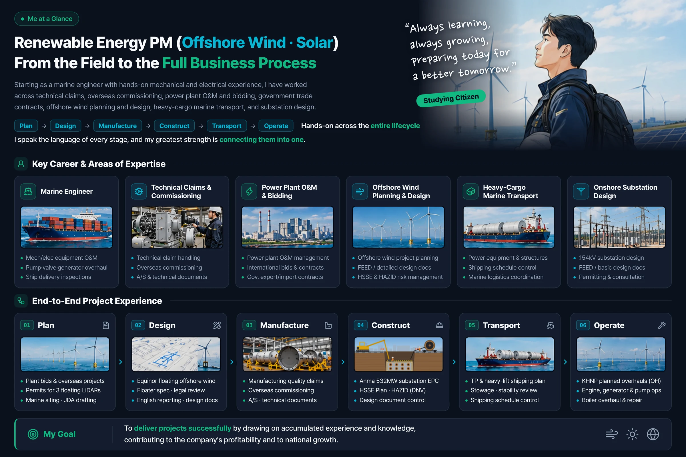
View full sizeA renewable energy (offshore wind and solar PV) project manager who started in the field and connects every phase of a project
On a foundation of hands-on work with mechanical and electrical plant as a ship's engineer, I have widened my career through technical claims and overseas commissioning at a manufacturer, O&M project management and bidding in power generation, and import-export contracting with public agencies, into offshore wind development and design, heavy-cargo marine transport and onshore substation design. Having worked every phase of a project, from development through operations, my strength is that I understand the language of each phase and connect them to one another.
I describe myself as a "citizen who studies" — a commitment to treat every site I work on as a place to learn, and to take on hard study and hard work together.
I have aligned the interests of site, head office and client, and managed the document system and schedule through basic and detailed design. I hold experience in change orders and progress billing.
EvidencePMP (PMI, 2022.09) / Project Management NCS, basic and intermediate 34h / Business Planning NCS 17h / MS Project
I drafted the permitting documents for floating offshore wind projects myself. These included scopes of work, prime and subcontract agreements, public waters occupancy applications, and joint development agreements.
EvidencePublic waters occupancy fee assessment / Floating LiDAR installation permitting / Marine siting consultancy / WindPro · QGIS
I wrote the HSSE Plan for the 532MW Anma offshore wind onshore substation EPCC. I contracted the HAZID study with DNV and managed its execution.
EvidenceHSSE Plan preparation / HAZID service contract and management (DNV) / OPITO Basic Offshore Safety 24h
I prepared bid packages for power plant maintenance services, covering both pre-qualification and technical evaluation. I reviewed RFPs and RFQs from international EPC clients and produced voyage and time charter quotations and proposals.
EvidenceTrade English Level 1 / Import-Export and Trade Practice NCS 18h / Cost Management Accounting 19h
I have operated and maintained engines, generators, pumps (gear, centrifugal and piston), compressors, motors, purifiers, boilers, hydraulic machinery and valves with my own hands. I can read drawings and manuals and hold technical discussions with suppliers.
EvidenceMarine Engineer Class 2 (Engine) / Machine Maintenance Engineer / Renewable Energy Equipment Engineer / Nuclear Power Systems training 77h
I have worked with international clients and classification societies including Equinor, DNV, Lamprell, Technip and Saipem through English-language documentation. I produced English versions of specifications, supervision progress reports, RFQs and proposals, and travelled to commissioning and technical-claim sites across Europe, the Americas, the Middle East, Asia and Africa to resolve problems on site.
EvidenceOverseas A/S and commissioning trips (approx. 80 flights in one year) / ITT Business English Translation Level 2 / One year of language study in Canada (ILAC/KGIBC)
Sekwang Engineering · Energy Development Division · Manager
A generation licence for offshore wind requires wind resource measurement first. Three floating LiDAR stations had to be installed, and each location needed its own public waters occupancy permit.
I drafted the full document set for the permitting service, from scope definition through to the subcontract.
I prepared and submitted every document required for the installation permits of the three floating LiDAR stations, completing the service without a hitch.
Sekwang Engineering · Energy Development Division · Manager
A technical service for the windfarm offshore area of the Firefly floating offshore wind project led by Norway's Equinor. Because the client was international, every deliverable required Korean statutory review and English reporting at the same time.
I was responsible for floating substructure technical documents, permitting legal review, public waters cost assessment, and English reporting to the client.
By leading the public waters occupancy applications, occupancy fee assessment, permitting review and marine siting consulting, I reduced the administrative and legal uncertainty of the project's early stage. I also supported the commercial negotiations by producing English versions of the client submissions and putting the technical and contractual documents in order.
HMT Megaline · Sales Division · Manager
Large structures for international EPC contractors — FLNG modules, offshore wind substations, transition pieces — can only be moved on self-propelled heavy transport vessels. Every cargo differs in weight, geometry and voyage conditions, so the optimal transport solution had to be established from the bidding stage onwards through stowage planning and stability review.
Handling chartering sales and business development for self-propelled heavy transport vessels, I covered everything from client RFP/RFQ review through proposals, quotations, bidding and contract awards to change order management.
I delivered proposals and quotations for international EPC projects including offshore wind TP transport, and learned the transport and installation constraints of offshore wind components in practice.
Samjin Elex · Transmission & Substation Division · Manager
The onshore substation EPCC project providing grid connection for the Anma offshore wind farm (532MW) in Yeonggwang, Jeollanam-do. The project was in transition from basic to detailed design. Design deliverables were being produced simultaneously, while the HSE framework had not yet been established.
Within the Transmission & Substation Division I was responsible for design document control, establishing the HSE framework, and awarding the risk review service.
I established and maintained the HSSE Plan for client submission, and managed the DNV HAZID engineering service end to end — from awarding the contract through execution to review of the deliverables. I also operated a document control system that systematically tracked drawing history and revisions in an area of frequent design change.
Soosan Industries · Project Management / New Growth Business / Overseas Business Team (concurrent)
This was the first time the Korean power maintenance industry had entered the competitive tender for routine maintenance of UAE Barakah NPP Unit 1. It was also the company's first overseas venture, so the bidding framework had to be built from nothing with no precedent to follow.
Working concurrently across the project management, new growth business and overseas business teams, I handled bid documentation and overseas partnership work.
I supported our entry into the Barakah NPP maintenance competitive tender and concluded MOUs with two local Saudi companies, building experience in overseas business development and partnership formation. Working on a large overseas project brought home how much depends on securing specialist personnel and on effective risk sharing, which led me to strengthen my project management capability and obtain the PMP certification.
Hanjin Shipping · Second Engineer
During a passage across the Indian Ocean the vessel's bow section flooded and much of the equipment in that compartment was submerged in seawater. Giving up would have delayed the sailing schedule and written off every flooded unit.
I relearned the equipment manuals from the beginning and carried out the recovery procedure prescribed by company guidance over two months. Every flooded unit was returned to normal operation and the vessel sailed on schedule. On the strength of the internal assessment of this work I was selected for the delivery team of a newbuilding ordered by the company.
Hanjin Shipping · Second Engineer
I took part as a delivery team member for the container ship Hanjin Indigo (45,169 GRT), ordered by Hanjin Shipping and built by Samsung Heavy Industries. At the yard I personally verified the installation, commissioning and acceptance inspection of the engine plant. I experienced the entire process by which design drawings become working equipment.
Transmission & Substation Division · Manager · Offshore Wind
Revenue KRW 180.0bn / 150 employees / Specialist contractor in electrical, ICT, fire protection and EMP shielding · http://www.samjinelex.com/
On the Anma Offshore Wind (532MW) onshore substation EPCC project I was responsible for design document control and for establishing the HSE framework.
Sales Division (Chartering & Customer Relationship Division) · Manager · Shipping & Logistics
KCTC subsidiary / Revenue approx. KRW 25.0bn / approx. 12 employees / Heavy-cargo carrier · https://www.hi-megaline.com/
I handled heavy transport vessel (HTV) chartering sales, covering proposals, quotations and change orders for international EPC clients.
Energy Development Division · Manager · Offshore Wind
Revenue approx. KRW 70.0bn / approx. 250 employees / Port and harbour engineering specialist · http://www.sekwangeng.co.kr/new/
I produced the development and permitting documents and design support deliverables for offshore wind generation projects.
Customer Support Team · Senior Team Leader · Marine Equipment
Revenue approx. KRW 30.0bn / approx. 44 employees / B2G marine equipment supply, commissioning and maintenance · https://dkmtech.com/
I handled technical support and original-manufacturer liaison for marine equipment supplied to the Coast Guard, Navy and other public agencies.
Project Management Team · New Growth Business Team · Overseas Business Team (concurrent) · Staff · Power & Plant
Revenue approx. KRW 263.8bn / approx. 1,316 employees / Power plant and plant electrical works and equipment maintenance · https://www.soosanind.co.kr/
I prepared domestic and international bid packages for nuclear, thermal and renewable O&M business, and supported overseas business development.
Quality Management Division · Assistant Manager · Marine Equipment Manufacturing
Revenue approx. KRW 355.8bn / approx. 284 employees / Manufacturer of ship components and emission abatement systems · https://www.worldpanasia.com/
I resolved domestic and international technical claims for ship components and emission abatement systems, and carried out after-sales field service.
Container Fleet Team · Second Engineer · Shipping & Logistics
Revenue approx. KRW 9.7tn / approx. 1,400 employees / Korea's largest shipping company
Serving as an engineer officer aboard full container ships, I operated and maintained mechanical and electrical plant across the vessel.
| Name | Issuer | Obtained |
|---|---|---|
| PMP (Project Management Professional) | PMI | 2022.09.15 |
| Machine Maintenance Engineer | Human Resources Development Service of Korea | 2024.06.18 |
| Renewable Energy Equipment Engineer (Photovoltaic) | Human Resources Development Service of Korea | 2023.06.09 |
| Marine Engineer Class 2 (Engine) | Korea Institute of Maritime and Fisheries Technology | 2012.11.19 |
| Trade English Level 1 | Korea Chamber of Commerce and Industry | 2021.10.06 |
| Computer Specialist in Spreadsheet & Database Level 1 | Korea Chamber of Commerce and Industry | 2016.04.22 |
| ITT Business English Translation Level 2 | International Interpretation and Translation Association | 2014.08.05 |
| Korean History Proficiency Test Level 1 | National Institute of Korean History | 2016.02.11 |
| Name | Issuer | Obtained | Hours | Field |
|---|---|---|---|---|
| Nuclear Power Systems Training | Korea Polytechnic III College | 2017.06.19 ~ 2017.06.30 | 77 | Power |
| [CFO Accounting] Financial Accounting Fundamentals | Hunet | 2021.11 | 36 | Accounting |
| Basic Offshore Safety Induction & Emergency Training (OPITO) | COENS | 2015.05.11 ~ 2015.05.13 | 24 | Safety |
| RT-flex Electronic Engine Advanced Course | Wärtsilä Land & Sea Academy | 2012.11.14 ~ 2012.11.16 | 24 | Equipment |
| Reefer Container Diagnosis and Repair | Hanjin Shipping Training Centre | 2010.02.03 ~ 2010.02.05 | 24 | Equipment |
| [CFO Accounting] Cost Management Accounting Fundamentals | Hunet | 2021.10 | 19 | Accounting |
| Import-Export Management and Trade Practice (NCS 02040302) | Hunet | 2019.10 | 18 | Trade |
| Project Management (NCS 01010102) | Hunet | 2021.10 | 17 | PM |
| Project Management Intermediate (NCS 01010102) | Hunet | 2022.01 | 17 | PM |
| Business Planning (NCS 02010101) | Hunet | 2022.01 | 17 | PM |
| Power Wiring (NCS, HRD-Net) | Korea Polytechnic University Dongbusan Campus | 2010.01.11 ~ 2010.01.12 | 16 | Equipment |
| Engine Room Automation System Operation Simulation | Hanjin Shipping Training Centre | 2010.04.01 ~ 2010.04.10 | 16 | Equipment |
| Halal and Middle East Market Business Practice | Korea International Trade Association | - | 16 | Trade |
| On-Site CS Response Methods (NCS 02010302) | Hunet | 2020.02.24 ~ 2020.03.24 | 8 | CS |
I completed ESL and Business English programmes at ILAC and an interpretation and translation programme at KGIBC.
As an engineer officer aboard full container ships I sailed all five oceans and six continents. While at Panasia I travelled to Europe, the United States, China, Australia, Southeast Asia and South Africa for after-sales service and technical claims. While at Soosan Industries I took part in overseas solar PV business in the UAE, Saudi Arabia, Malaysia and Vietnam.
Bachelor's degree / GPA 3.81 / 4.5
Graduated
Registered national researcher (ID withheld)
I participated as a researcher across two project years, at a 74% participation rate, in the national R&D project "Development of a Next-Generation Global 3D Maritime Traffic Control System based on AI and e-Navigation" (2019.10 ~ 2022.03 · government funding KRW 215m · DK MTech). The record is registered with the National Science and Technology Information Service (NTIS).
Advanced Hangul (HWP), MS Word, MS Excel, MS PowerPoint
Working MS Project, QGIS, WindPro, AutoCAD, PDF editing
Republic of Korea Navy, Transport Branch / 2010.02.02 ~ 2013.05.11 / Completed as industrial reserve personnel (sea service)
Director, Hanmaum Blood Centre, Korea Industrial Health Association / 2023.12.30
Scanned copies of certifications and training certificates. Select a thumbnail to open the full image in a new tab.
Linking experience, connecting people, delivering projects — I look forward to the next conversation.
effective-altruist@naver.comPrint from your browser (Ctrl+P) to get the full page, including collapsed sections, on A4.